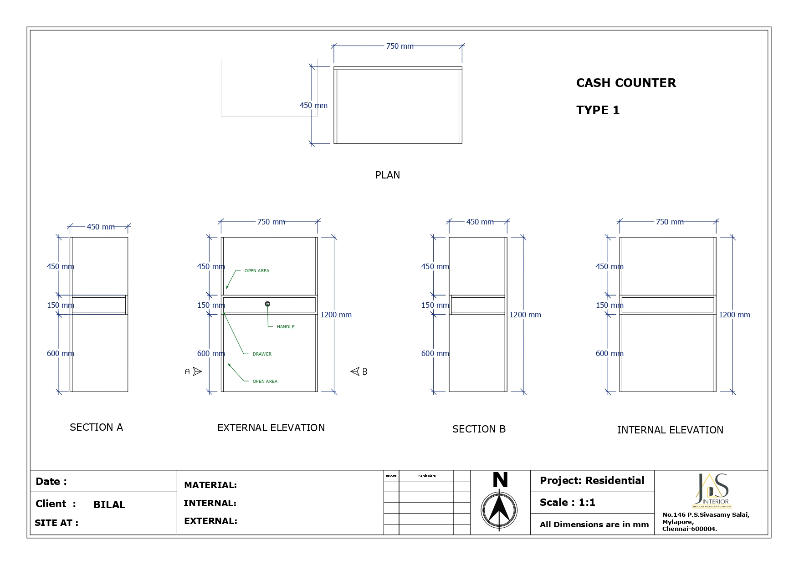
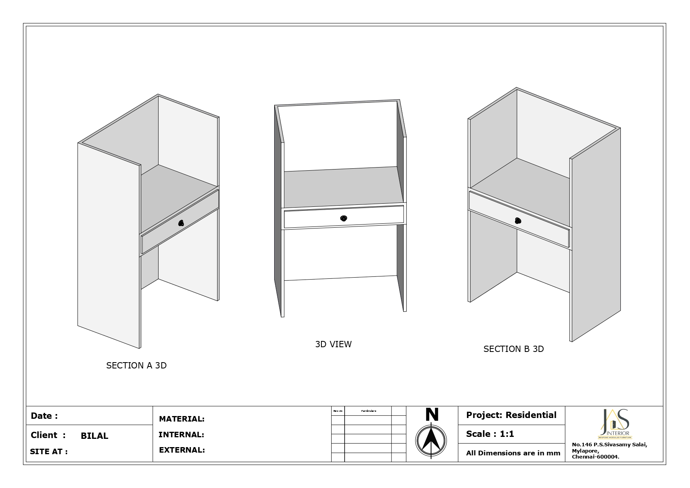
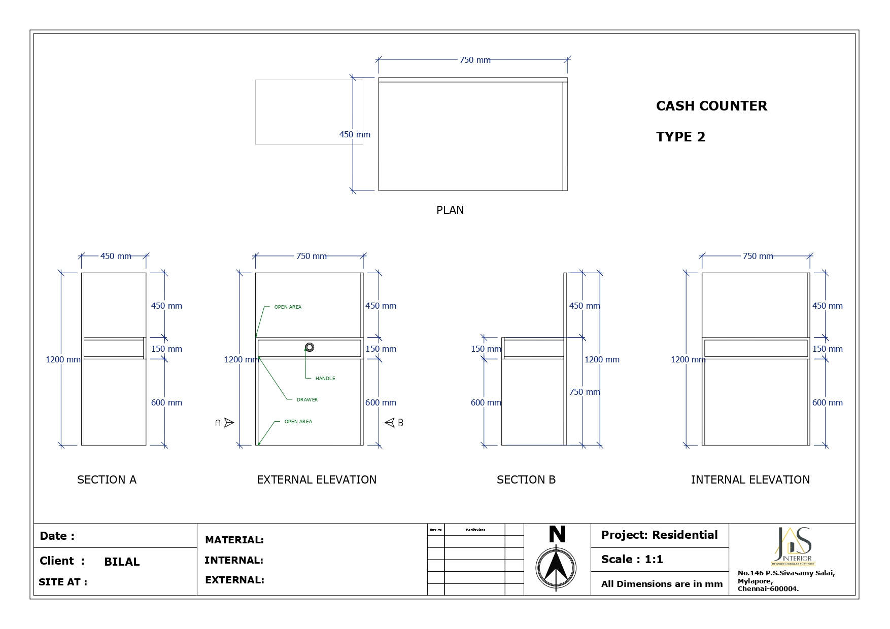

Project Details
Basic Information
Project Name: Cash Counter Design and Implementation
Client: Bilal
Project Type: Residential
Project Description
This project involves the design and construction of a custom cash counter tailored for a residential client named Bilal. The design emphasizes functionality and aesthetics, ensuring efficient space utilization while maintaining a modern and professional appearance.
Key Features
- Multiple Configurations: Two types of cash counters with distinct layouts to accommodate various functional needs.
- Detailed Design Specifications: Precise measurements, including sections for drawers, open areas, and multiple storage compartments.
- 3D Visualization: Detailed 3D views of internal and external elevations for comprehensive visualization.
- High-Quality Materials: Premium materials for both internal and external finishes, ensuring durability and a sleek look.
- Custom Dimensions: Custom-sized counters with dimensions like 450mm and 750mm segments, and 1200mm and 600mm modular components.
Technical Aspects
- Plans and Elevations: Detailed architectural plans, including sectional views and external elevations.
- 3D Modeling and Rendering: Advanced 3D modeling techniques for design visualization before implementation.
- Client-Centric Design: Customized to the client's requirements for a perfect fit in the designated space.
Challenges and Solutions
- Space Optimization: Achieved by designing modular components that maximize storage while maintaining a clean and organized appearance.
- Aesthetic Appeal: Maintained through thoughtful material selection and precise elevation planning.